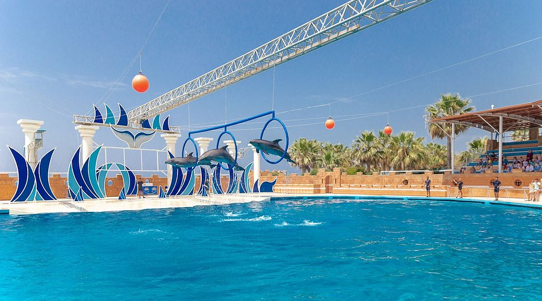

Iskoristite rođendanski popust za kupovinu karata!
Ostvarite sjajne popuste na kupovinu karata i našu školicu sporta povodom našeg 20-og rođendana.
Rodjendanska žurka
Juce smo našem najmlađem članu parka prolsavili prvi rođendan! Vidi slike
Ko smo mi?
Delfinarijum je jedini park u regionu koji nudi zabavan i rekreativan sadržaj koji uključuje delfine. Da dobri ste čuli, delfine. Ovaj park predstavlja spoj zabave, druženja, igre ali i sticanja novih znanja o delfinima. Akva park ima i 7 bazena, bazen sa talasima kao i bazene različitih dubina prilagođene deci i odraslima, možete igrati vodeni fudbal u bazenima i zabavljati se sa prijateljima ili drugim posetiocima, bandži jumping sa visine od 70 metara, dečije bazene, rafting sa 300 metara visinske razlike sa veštačkim talasima, gde ćete doživeti neverovatnu vožnju i rafting sve u okviru ovog akva parka. Takođe ima i terasu za uživanje u suncu i pogledu na more i obalu Rovinja, gde se možete odmoriti od zabave. Vodeni park ima kapacitet od 2000 ljudi dnevno koliko može da primi i obuhvata povrsinu od 6500m2. UKoliko volite delfine, zabavu, igru i druženje onda je Delfinarijum pravo mesto za vas.

Gde se nalazimo?
Nalazimo se 56km istočno od Rovinja, u uvali Jadranskog mora. Ovde možete videti detaljniju lokaciju.